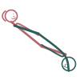

Side Hand-Held
Parsva Kara Bandha
How to
Lying on their sides facing each other, hands clasped together between them.
Benefits
- Simple, calm, and intimate
- Keeps the connection central
- Comfortable for a long, slow pace
Practice
Sometimes just holding hands, lying close, is enough — no need to rush past it.

Get the Kama Sutra appFree, no ads, works offline
Google Play
General information, not medical advice. If you have a health condition or pain, talk to a doctor or qualified teacher first.